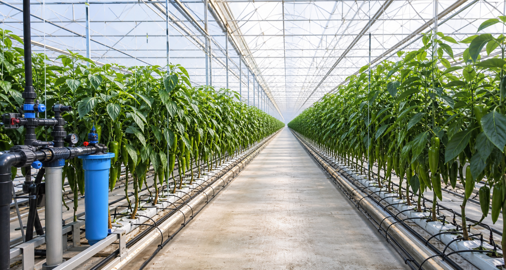
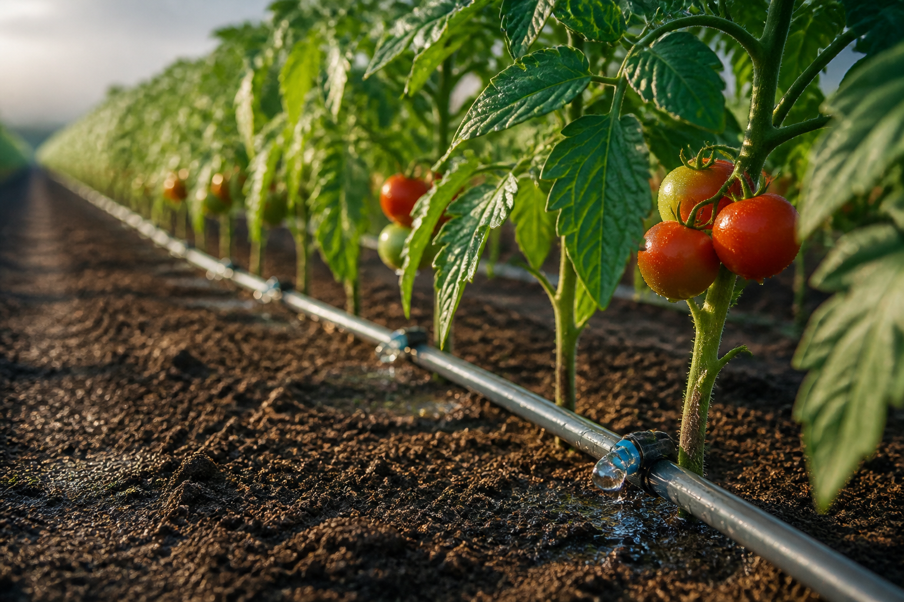
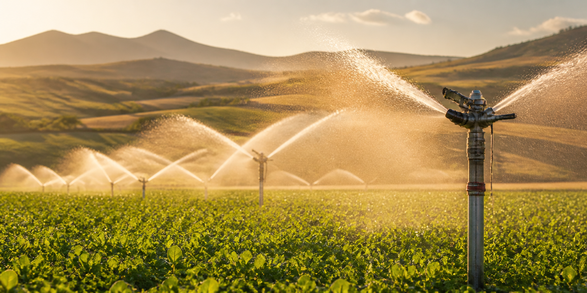
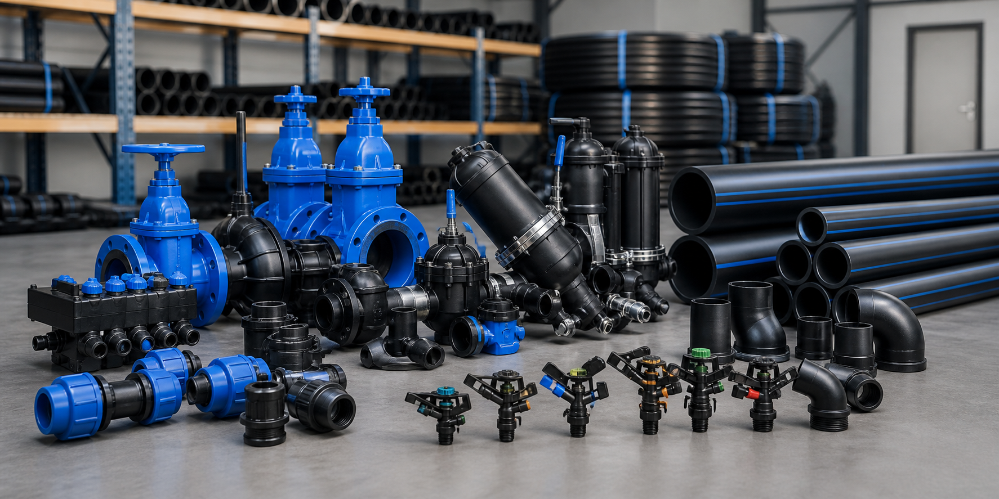
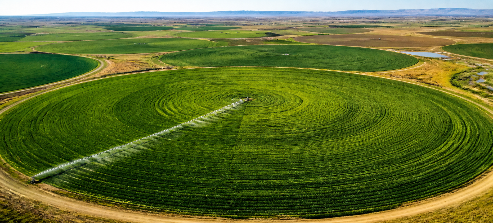

Projeye özel planlama
Arazi, ürün ve su kaynağınıza uygun sistemi birlikte planlıyoruz.
Projenizi anlatın →Yüksek verimli tarımsal sulama çözümleriyle
üretiminize değer katın.
Suyun her damlasını verime dönüştüren profesyonel çözümler.
Arazi, ürün ve su kaynağınıza uygun sistemi birlikte planlıyoruz.
Projenizi anlatın →Tarla koşullarına dayanıklı, verimli ve bakımı kolay ürünler sunuyoruz.
Ürünleri keşfedin →Kurulumdan bakıma kadar ihtiyaç duyduğunuz her aşamada yanınızdayız.
Bizi arayın →Ürün ve proje talepleriniz için WhatsApp üzerinden hızlı dönüş sağlıyoruz.
WhatsApp →Doğru sulama teknolojisiyle daha güçlü üretim, daha az su tüketimi.





Bilgileri doldurun; hazırlanan mesajla WhatsApp üzerinden hızlıca teklif isteyin.
+90 505 224 24 48